Two Optimized Solutions for PMIC Test with V93000 Resources
Sophia Zhang, Verigy
Paper ID 110064
Abstract
Power management ICs (PMICs) is a critical part of portable consumer appliances. IC testing engineers are now facing a new level of challenge to test PMIC parameters faster with higher accuracy to meet low cost requirement. This paper introduces 2 optimized and high efficient test solutions to measure PMIC parameters using V93000 DC resources.
The first solution will introduce a fast approaching method to test one key LDO parameter - Vdropout. This method can get the exact Vdropout condition within two steps. Comparing to conversial voltage-ramping method, it will dramatically save over 80% test time and make it possible to put Vdropout test into production.
The second solution will introduce a one-time-running method. This solution will use V93000 DC resources (DC-scale, MS-DPS and Gang-PPMU) or AV8-digitizer in parallel to measure multiple static and dynamic parameters of LDO and DC/DC in one integrated test.
Key Words
LDO, DC/DC, Switch-IC, PWM, PFM, PMIC, PSRR, Dropout voltage, Ripple, fast-approaching, one-time-running
Two Basic Voltage Regulators
General PMICs include many voltage regulators (LDO, BUCK or BOOST) which play a very important role. The voltage regulator's main function is to provide a clean, fixed supply voltage to other SOC modules or devices (i.e., CODEC, RF, Logic, LCD). Without voltage regulation, changes in these modules or devices would cause havoc.
There are two basic kinds of regulators structure, they are:
- Linear regulator
- Switch-mode regulator or DC/DC converter
Linear Regulator(LDO)
Linear regulators are based on devices that operate in their linear region - in contrast, a switching regulator is based on a device forced to act as an on/off switch - with the topology shown in Figure 1. As a basic voltage regulator, its main components are a series pass transistor (bipolar transistor or MOSFET), differential error amplifier, and precise voltage reference. One input to the differential error amplifier, set by resistors R1 and R2, monitors a percentage of the output voltage. The other error amplifier input is a stable voltage reference (VREF). If the output voltage increase relative to VREF, the differential error amplifier changes the pass-transistor's output to maintain a constant output load voltage (VOUT).
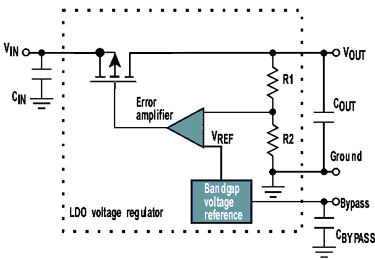
Figure 1. Linear Regulator Topology
LDO stands for Low Drop Out, which is a type of linear regulator. All linear regulators for cellular phone is LDO type.
Detail about LDO dropout voltage and V93000 solution about it will be described the following section of this paper.
Switch-mode Regulator (DC/DC)
A switching regulator is a power processor in which the power handling devices are operated as switches in either ON or OFF positions. A given topology is used to obtain a specific result, such as voltage step-down, voltage step-up, or voltage step-up and current step-up.
The regulation process of a switch mode converter is performed via the pulse width modulator with a control voltage derived from the output of the converter.
To achieve high efficiency at low output loading PFM-PWM topology will be usually employed in switching devices. With such topology the device automatically switches between PWM (Pulse Width Modulation) and PFM (Pulse Forced Modulation) depending on the value of the output current. Under low load conditions, the device goes into PFM mode, which implies that it is not switching at all times. This is the feature that allows the device to achieve high efficiency at very low output currents. When the device is operating at higher loads, the device is in PWM mode and delivers very efficient performance (greater than 90%).
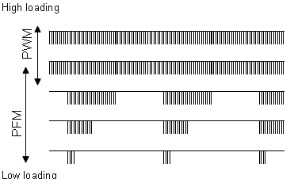
Figure 2. PWM/PFM - Switching Modulation for Low Power Loss
In the implementation of switch mode regulator, one or more of three basic configures are usually employed, other circuit topologies are usually derived from one or more of these configurations. These three basic configuration are the BUCK converter (Step-down), the BOOST converter (Step-up), and the BUCK-BOOST converter (Step-up-down). They are basic in the sense that only one switch is used and there is no isolation from the output circuits.
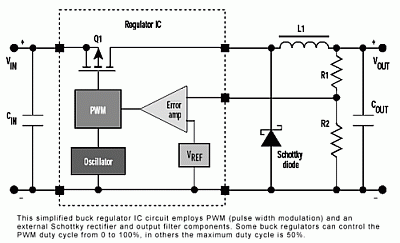
Figure 3. BUCK Topology
Figure 3 shows a simplified buck converter that accepts a dc input and uses pulse-width modulation (PWM) of switching frequency to control the output of an internal power MOSFET (Q1). An external Schottky rectifier diode, together with external inductor and output capacitors, produces the rectified, filtered dc output. The regulator IC compares a portion of the rectified dc output with a voltage reference (VREF) and varies the PWM duty cycle (on-time vs. total switch period) to maintain a constant dc output voltage. If the output voltage increases slightly due to a reduced load, the PWM briefly lowers its duty cycle to reduce the regulated output, keeping it at its proper voltage level. Conversely, if the output voltage tends to go down, the feedback causes the PWM duty cycle to briefly increase and maintain the proper output.
Comparing Linear Vs. Switching Regulators
The following table shows us the comparison result of linear and switch-mode regulator from a different aspect.
|
Linear |
Switching |
|---|---|---|
Function |
Only steps down; input voltage must be greater than output. |
Steps up, steps down, or inverts |
Efficiency |
Low to medium, but actual battery life depends on load current and battery voltage over time; high if Vin-Vout difference is small. |
High, except at very low load currents (µA), where switch-mode quiescent current is usually higher. |
Waste Heat |
High, if average load and/or input/output voltage difference are high |
Low, as components usually run cool for power levels below 10 W |
Complexity |
Low, which usually requires only the regulator and low-value bypass capacitors |
Medium to high, which usually requires inductor, diode, and filter caps in addition to the IC; for high-power circuits, external FETs are needed |
Size |
Small to medium in portable designs, but may be larger if heatsinking is needed |
Larger than linear at low power, but smaller at power levels for which linear requires a heat sink |
Total Cost |
Low |
Medium to high, largely due to external components |
Ripple/Noise |
Low; no ripple, low noise, better noise rejection. |
Medium to high, due to ripple at switching rate |
Key Test Items for LDO and DC/DC
General test items for LDO and BUCK/BOOST:
|
|
The key and must-do tests:
- Accuracy at normal
- Load_regulation at different Vin when Loading current is fixed
- Line_regulation at different Loading current when Vin is fixed
What Is The Test Challenge For These Key Tests?
- Each of these tests may be repeated across numerous variations of programmed codes, Line voltages and Load currents.
- There may be numerous cores with unique code, line and load requirements.
- We need to do all this fast, and in parallel!
Facing these challenges, we will introduce two optimized solutions for key PMIC parameters:
- fast approaching Solution for LDO Vdropout test
- one-time-running solution for LDO and DC/DC parameters
"Fast Approaching" Solution for LDO Vdropout Test
What is dropout voltage?
Low dropout refers to the difference between the input and output voltages that allow the IC to regulate the output load voltage. That is, an LDO can regulate the output load voltage until its input and output approach each other at the dropout voltage. Ideally, the dropout voltage should be as low as possible to minimize power dissipation and maximize efficiency. Typically, dropout is considered to be reached when the output voltage has dropped to 100 mV below its nominal value. The load current and pass transistor temperature affect the dropout voltage.
All linear regulators for cellular phone are LDO type. Dropout voltage is one of the most important and must-to-test parameters for LDO.
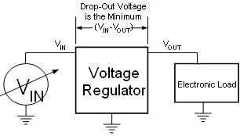
Figure 4. Vdropout Definition
Vdropout Test Conditions
Traditionally it needs to apply an input voltage one Volt above the LDO's nominal output and then to load the device with the specified test current. Assume the tester applies 4.3 V to a 3.3 V LDO regulator. The tester measures the output voltage (assume it measures 3.3V) and then reduces the input voltage until the output voltage drops by 100 mV to 3.2 V. This type of test defines dropout as the input voltage minus the output voltage at this point. Thus, if Vin = 3.5 V when Vout = 3.3 V, the LDO regulator has a 300 mV dropout voltage. The data sheet for an LDO tested this way will include a note such as: "Dropout voltage is defined as the differential voltage between Vout and Vin when Vout drops 100 mV below the value measured with Vin = Vout + 1V."
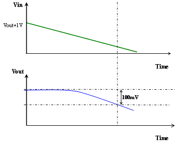
Figure 5. Traditional Vdropout Test Method (1)
Vdropout Test Implementation
Traditional Test Method for Vdropout Test
Input pin:
- Use DPS and AWG to generate a ramp-down waveform
Output pin:
- Using DC-Scale/gang-ppmu to force expected current
- Using Digitizer to capture the output waveform
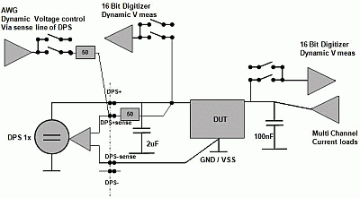
Figure 6. Traditional Vdropout Test Method (2)
During testing, all these input and output resources work in parallel. The waveforms of input-AWG and output-digitizer captured must be synchronous.
A complex post-data-analysis must be performed to find the time point when Vout dropped from normal value to 100 mV. After get this time point, the corresponding Vin value can be calculated. To assure the synchronization of input-AWG and output-digitizer, sometime an additional input-digitizer will be added in the LDO input pin like below figure.
The disadvantages of this traditional test method are:
- Additional AWG and digitizer channels are needed. It increases the complexity of L/B design as well as test program developing and debugging.
- Complex post data-analyze
- Long test time costs.
For most LDO devices, Vdropout value is about 500~200 mV. When testing Dropout voltage, it requires creating a very accurate ramp-down; the voltage step always need less than 5 mv. For each step about several ms waiting time is needed. So in general only the waveform will last several seconds. Putting in the current forcing, analog resource setup time, the total time will be too long to be acceptable to customer.
Now an optimized solution is generated to test this key parameter. It is really simpler and faster. We call it fast approaching method.
Fast approaching test method for Vdropout Test
Saturation Line
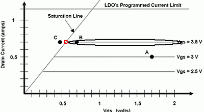
Figure 7. Typical FET V-I Graph
First, it is necessary to understand what is happening to the LDO during dropout. A typical LDO has an n-channel or a p-channel FET pass element. The control circuitry modulates the gate of the FET so that it operates in the linear region. Figure-7 shows a typical FET V-I curve. Note that the x-axis in the figure is the FET's drain-to-source voltage, which is Vin-Vout for an LDO.
The FET has a minimum resistance that is shown by the Saturation Line in Figure 7. If the circuit conditions require the FET operate with a lower resistance than the Saturation Line allows, the LDO is in dropout.
The static FET resistance in this example is calculated by dividing the change in voltage by the change in current. If we hold the current unchanged, the Vds=Vin-Vout will be unchanged. That means Vin and Vout has an approximating linear shape.
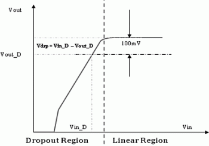
Figure 8. Vdropout Test (Fixed Iout)
Based on this a solution named fast approaching is generated which can get the final result according two steps guessing (two points define one line in geometry).
- At the beginning the nominal Vout value (Named as
vout_norm_meas) should be tested at the Vin_nom which is
normally defined as spec-expected
Vout(nom) +1Vat specified loading value. - In the first guess Vin will be set as
vout_norm_meas -Vdrp_spec, here Vdrp_spec is the typical dropout value at same loading current in the spec. Then the following measured Vout (named as vout_delta) will be the base for the following second guess.Vin_1st =vout_norm_meas - Vdrp_spec
- Second guess: Based on the measured Vout value in the 1st guess, 2nd
Vin value is guessed through following formula:
vin_2nd= vin_1st + (vout_norm_meas- vout_delta) - 0.100
Forcing this Vin value and measure the output Vout, name as vout_delta, then you can get the Vdrpout value through vin_2nd subtract vout_delta.
Usually through two time guess you can get the dropout condition with less than 5 mV accuracy which can meet most requirements. If you need more accuracy you can try a third guess using the same rule.
Pseudo Code:
//get vout at normal vin vout_meas_300[site] // 1st guess at Vin for dropout condition vin_custom[site]= vout_meas_300[site]-0.200; // get vout data vout_delta[site] // 2nd guess at Vin apply correction to vin vin_custom[site] = vin_custom[site] + (vout_meas_300[site] - vout_delta[site]) - 0.100; // get vout data vout_delta[site] vout_delta_300[site]= (vout_delta[site]-vout_meas_300[site])*1000;//mv scale // get dropout data
V93000 Hardware Implementation
This test can be implemented by our new DC module (DC Scale) with high accuracy and multi-site efficiency. The old gang-PPMU method is also a choice for it.
In lab we have used the gang-PPMU method to test it in single site. Total test time is about 70 ms. Compare the old 3 s to 5 s traditional test method, over 80% test time is saved.
Lab data is shown below:
Execute 'LDO13_DRP_TEST': * * * * * * * * * * * * * * * * * * * * * * * **** Dropout Test of LDO13 - - - - - - - - - - - - - - - - - - - - - - - * * * * * * * * * * * * * * * * * * * * * * * ** Load current = -300mA Vbat = 3.7 V OUT13_s @300mA @3.7V is :3.19857 Vbat = 3.40857 V OUT13_s @300mA @3.40857V is :3.08228 Vbat = 3.42485 V OUT13_s @300mA @3.42485V is :3.09859 ** Vdropout@300 mA (LDO13) = 326.257mV ** Vout droppped 99.972 mV (95mV~105mV) Total result: PASSED
Conclusion
This fast approaching method gets the exactly Vdropout condition within two steps. Comparing to conversional voltage-ramping method, it will dramatically save over 80% test time and make it possible to put Vdropout test into production.
"One-time-running" for PMIC Voltage Regulator
One-time-running means the integration of many static and dynamic parameters of LDO or DC/DC modules into one integrated test package, which is showed in Figure 9.
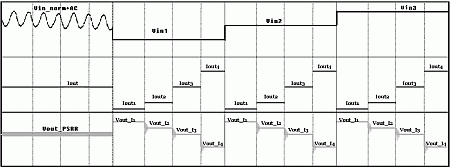
Figure 9. "One Time Runnning" Methodology
This one time solution will use minimum number of test-condition-change times to get maximum number of test parameters.
In this methodology:
- For input pin Vin:
There are two parts, one is a sine-wave for PSRR test, another is a 3-step-wave (norm, min and max) for load-regulation and line-regulation.
- For Output pin Vout:
This is just a
IFVMwaveform which changing the forcing current and measure voltage many times.
V93000 hardware implementation
Two hardware implementation of this one-time-running solution:
- Method 1:
MS-DPS as input ,n gang-PPMU as force and 1 PPMU as well as one digitizer as sense for output pin
- Method 2:
DC_scale(DPS32) channels as input and output
Obviously Method 2 has much simpler hardware structure, and it will make L/B design and layout simpler.
Operation Modes for "One-Time-Running"
There are two operation modes for this integrated test-package.
- Static mode: One time resources setup with dynamic forcing value
- Dynamic mode: DC-pattern running with several DC setting
Let's review V93000 DC resources DC-function mode first:
Resource Functions |
DC Scale |
PPMU |
AV8 Digitizer |
|---|---|---|---|
Voltage Force |
Dynamic/Static |
Dynamic/Static |
- |
Voltage Measure |
Dynamic/Static |
Dynamic/Static |
Dynamic |
Current Measure |
Dynamic/Static |
Dynamic/Static |
- |
Current Force |
Static * |
Dynamic/Static |
- |
* DC Scale provides current load from current clamp.
- Current clamp DACs not dynamically controlled by Test Processor
Static Mode Running:
(* No dynamic parameters such as PSRR, frequency and ripple etc.)
Implementation Description
- Method1
- Flex DC with Gang-PPMU, DPS-spec_change/DPS_TASK
- Method2
- SPMU_task and DPS_TASK/ DPS-spec_change
- Higher measurement accuracy
- Higher multi-site efficiency.
Lab experiment for static one-time-running
We tested three buck(BUCK1, BUCK2, BUCK3) in parallel.
For each buck we tested the Vout value at three different loading values (2 mA, 30 mA, 300 mA) and 3 Vin values(3.2V, 3.7 V, 4.2 V). So totally 3*3*3=27 Vout values are tested, and all related load-regulation and line-regulation is out at the same time. The total test time is about 300 to 400 ms.
* * * * * * * * * * * * * * * * * * * * * * * * * * * * * * * * **** BUCK1, BUCK2, BUCK3 Vout Test - - - - - - - - - - - - - - - - - - - - - - - - - - - - -- - - - * * * * * * * * * * * * * * * * * * * * * * * * * * * * * * * * current_Input_supply pins IN1,IN2,IN3 current_force_pins BUCK_all_F current_sense_pins BUCK_all_S ppmu-gangnum/pin 4 IN1,IN2,IN3(Input Power) = 3.7 V ____ Load current = -2mA ( ** PPMU force/pin is 0.5 mA Active_load/pin is 0 mA ) VO1_s @2mA @3.7V = 0.789372 V VO2_s @2mA @3.7V = 0.844804 V VO3_s @2mA @3.7V = 1.57686 V ____ Load current = -30mA ( ** PPMU force/pin is 7.5 mA Active_load/pin is 0 mA ) VO1_s @30mA @3.7V = 0.780471 V VO2_s @30mA @3.7V = 0.835826 V VO3_s @30mA @3.7V = 1.56191 V ____ Load current = -299.999mA ( ** PPMU force/pin is 39.9998 mA Active_load/pin is 35 mA ) VO1_s @299.999mA @3.7V = 0.700361 V VO2_s @299.999mA @3.7V = 0.754401 V VO3_s @299.999mA @3.7V = 1.4443 V Load-Regulation of VO1_s (2mA_30mA @3.7V) = -8.901 mV Load-Regulation of VO2_s (2mA_30mA @3.7V) = -8.978 mV Load-Regulation of VO3_s (2mA_30mA @3.7V) = -14.944 mV Load-Regulation of VO1_s (2mA_299.999mA @3.7V) = -89.011 mV Load-Regulation of VO2_s (2mA_299.999mA @3.7V) = -90.403 mV Load-Regulation of VO3_s (2mA_299.999mA @3.7V) = -132.559 mV IN1,IN2,IN3(Input Power) = 4.2 V ____ Load current = -2mA (** PPMU force/pin is 0.5 mA Active_load/pin is 0 mA ) VO1_s @2mA @4.2V = 0.787359 V VO2_s @2mA @4.2V = 0.845114 V VO3_s @2mA @4.2V = 1.58522 V ____ Load current = -30mA (** PPMU force/pin is 7.5 mA Active_load/pin is 0 mA ) VO1_s @30mA @4.2V = 0.780316 V VO2_s @30mA @4.2V = 0.835749 V VO3_s @30mA @4.2V = 1.56966 V ____ Load current = -299.999mA (** PPMU force/pin is 39.9998 mA Active_load/pin is 35 mA ) VO1_s @299.999mA @4.2V = 0.700438 V VO2_s @299.999mA @4.2V = 0.753472 V VO3_s @299.999mA @4.2V = 1.45359 V Load-Regulation of VO1_s (2mA_30mA @4.2V) = -7.043 mV Load-Regulation of VO2_s (2mA_30mA @4.2V) = -9.365 mV Load-Regulation of VO3_s (2mA_30mA @4.2V) = -15.564 mV Load-Regulation of VO1_s (2mA_299.999mA @4.2V) = -86.921 mV Load-Regulation of VO2_s (2mA_299.999mA @4.2V) = -91.642 mV Load-Regulation of VO3_s (2mA_299.999mA @4.2V) = -131.631 mV IN1,IN2,IN3(Input Power) = 3.2 V ____ Load current = -2mA (** PPMU force/pin is 0.5 mA Active_load/pin is 0 mA ) VO1_s @2mA @3.2V = 0.786431 V VO2_s @2mA @3.2V = 0.844727 V VO3_s @2mA @3.2V = 1.56757 V ____ Load current = -30mA (** PPMU force/pin is 7.5 mA Active_load/pin is 0 mA ) VO1_s @30mA @3.2V = 0.77931 V VO2_s @30mA @3.2V = 0.835981 V VO3_s @30mA @3.2V = 1.55278 V ____ Load current = -299.999mA (** PPMU force/pin is 39.9998 mA Active_load/pin is 35 mA ) VO1_s @299.999mA @3.2V = 0.699045 V VO2_s @299.999mA @3.2V = 0.754014 V VO3_s @299.999mA @3.2V = 1.43377 V Load-Regulation of VO1_s (2mA_30mA @3.7V) = -8.901 mV Load-Regulation of VO2_s (2mA_30mA @3.7V) = -8.978 mV Load-Regulation of VO3_s (2mA_30mA @3.7V) = -14.944 mV Load-Regulation of VO1_s (2mA_299.999mA @3.7V) = -89.011 mV Load-Regulation of VO2_s (2mA_299.999mA @3.7V) = -90.403 mV Load-Regulation of VO3_s (2mA_299.999mA @3.7V) = -132.559 mV Line-Regulation of VO1_s @2mA (Vin =3.2-4.2V) = 0.928 mV/V Line-Regulation of VO2_s @2mA (Vin =3.2-4.2V) = 0.387 mV/V Line-Regulation of VO3_s @2mA (Vin =3.2-4.2V) = 17.654 mV/V Total result: PASSED Device test PASSED!
Dynamic mode running:
- Method 1
One DC pattern can include MS-DPS modulation, MS-DPS Vbump, as well as PPMU SETTING to do the voltage and current forcing and 'Digitizer" to capture output waveform in parallel.
All parameters include static (accuracy, line regulation and load regulation) and dynamic (PSRR, ripple, frequency as well as duty etc) can be achieved at the one time.
- Method 2
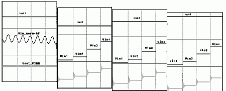
3 or more DC patterns needed, each DC-pattern includes several level changes.
Current forcing condition should be set before pattern running, input level change and output voltage measure (capture) will be complete in one DC pattern.
Higher parallel efficiency.
Lab experiment for dynamic one-time-solution
In lab, we used one programmable BUCK as sample, which need to test three programmable values (min, max and typical) at three different loading (0,100mA,300mA) and 3 different vin(3.2,3.7,4.2V). Also dynamic parameters such as frequency, ripple, also need tested.
Using this dynamic one-time-solution, we only created one DC_pattern,after this pattern running all needed data can be got.
In DC-pattern:
- Write the register to set BUCK Vout to the expected out value
- Setup PPMU to force 3 different loading values(0ma, 100mA, 300mA)
- Using MS-DPS Vbump to force 3 Vin level (3.7V, 4.2V, 3.2V)
- Using digitizer to capture the Vout value
Figure 10 is the captured waveform in BUCK output pins
Compared to static mode, we can easily get all the programmable value for LDO and DC/DC, in addition in dynamic mode the dynamic parameters such as ripple, frequency at different loading and duty can also be easily got.
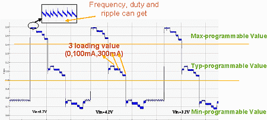
Figure 10. Dynamic Lab Result of One Time Runnning
Conclusion
This "one-time-running" solution uses V93000 DC resources (DC scale, MS-DPS and Gang-PPMU) or AV8-digitizer in parallel in static and dynamic ways to test multiple static and dynamic PMIC parameters.
Nearly all PMIC key parameters (for example, accuracy, line-regulation, load-regulation, PSRR, PFM frequency, efficiency... etc) will be gotten after "one-time-running". Test time is greatly reduced.
References
[1] Junichi Miyamoto,Alexander Zuendorf, Martin Schmitz, "PMIC TTT Guide" v.0.52 Sept. 22, 2005
[2] Hagen Goller "DC measurements on V93000", May 2006
[3] Keita Gunji, "DC Scale AE Training" July.'08
Biography
Sophia Zhang is a graduate of Fudan University, Shanghai, with a Master Degree in Microelectronics. Sophia worked in CECT58 as a test engineer from 1997-1999 focused in the digital and mixed-signal field. She worked at Millennium Microtech (Shanghai) Co., Ltd. from 1999 to 2005 as a senior test engineer focused in PMIC, OPA, etc. Sophia has worked for Agilent/Verigy since 2005, now as an application engineer focused in DC, Mixed-signal, etc.
Copyright
Verigy owns the copyright of all submitted papers. Verigy has the right to reuse the papers as they see fit for the success of VOICE. By submitting this paper you are agreeing to these terms.